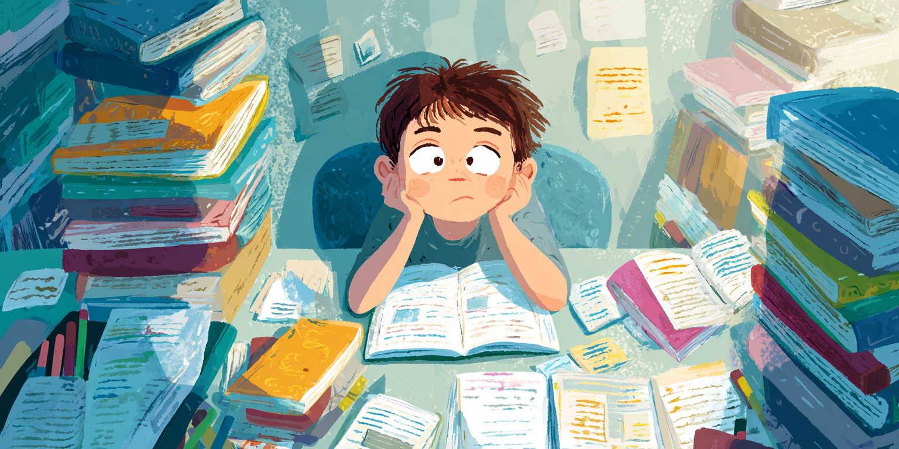

От скуки к вдохновению: как превратить свои увлечения в английский язык
Многие находят изучение иностранных языков довольно скучным — в основном потому, что не видят, как это связано с их жизнью или целями. Но вот в чём дело: учиться языку гораздо проще и интереснее, когда это связано с тем, что действительно вас зажигает, с тем, что вам по-настоящему важно.
И наука это подтверждает. Когда вы мотивированы и эмоционально вовлечены, мозг впитывает новую информацию, как губка. А если учитесь через темы, которые вам близки, запускается система вознаграждения мозга — да-да, тот самый выброс дофамина — а это значит, что вы становитесь более сосредоточенными, замотивированными, а память работает лучше. Круто, правда?
Когда уроки связаны с тем, что вам нравится, вы чувствуете себя позитивно и хотите продолжать. Стресс снижается — и, скажем честно, это облегчает всю учёбу. Такая эмоциональная связь помогает мозгу закреплять знания надолго. Плюс, когда язык связан с вашими интересами, всё начинает происходить естественно. Вы начинаете говорить плавно и уверенно, почти не замечая, как это происходит.
Если подстроить изучение языка под то, что вас вдохновляет, это не просто веселее — это умнее. Вы работаете в ритме своего мозга, и поэтому усваиваете быстрее и дольше помните. Неудивительно, что персонализированный, релевантный материал всегда лучше скучных зубрёжек.
Учим английский через игру
Представьте себе: ребёнок обожает Minecraft. Вместо того, чтобы штудировать учебники, он погружается в мир Minecraft, где всё — инструкции, вывески, задания — на английском. Ребёнок строит, исследует, общается с другими игроками, используя английские слова и команды.
Так как ребенок занимается тем, что любит, система вознаграждения мозга работает на полную, и учиться становится гораздо проще. Он решает задачи и говорит на английском, даже не чувствуя стресса — всё получается легко и естественно.
Такое сочетание чтения понятных инструкций и живого общения очень похоже на то, как дети учат родной язык. Когда учишься через то, что нравится, мотивация, концентрация и память резко улучшаются. Вдруг английский перестаёт казаться таким сложным и скучным.
Учим английский через творчество
Теперь представьте человека, который увлекается веб-дизайном и хочет выучить английский. Вместо простого зубрёжки грамматики он создаёт простой сайт, следуя туториалам и пишет комментарии к коду — всё на английском.
Потому что он создаёт что-то важное для себя, мозг остаётся мотивированным и сосредоточенным, снова включая систему вознаграждения, которая помогает закрепить знания. Работая над дизайном и рассказывая о своих проектах, он укрепляет языковые навыки, и это совсем не кажется рутиной.
Такое сочетание чётких инструкций и практической работы — именно тот способ, как мы учимся лучше всего: занимаясь тем, что нам действительно интересно. Это персонализированный подход, который улучшает концентрацию, память и уверенность, делая изучение английского через веб-дизайн не только эффективным, но и приятным.
В общем, когда вы учите язык через то, что любите, это перестаёт быть скучной задачей и превращается в что-то значимое и весёлое. Будь то игры, творческие проекты или полезные навыки — такой подход поддерживает мотивацию и работает в ритме того, как ваш мозг естественно учится. Когда вы учитесь, занимаясь тем, что нравится, концентрация становится острее, память — лучше, а говорить — легче. В итоге, изучая язык через свои увлечения, вы продвигаетесь быстрее, получаете удовольствие от процесса и действительно начинаете использовать язык — а не просто заучиваете правила. Звучит здорово, правда?
Так почему бы не попробовать? Найдите что-то, что вам действительно нравится — игру, хобби или навык — и начните учить английский через это. Погружайтесь, не бойтесь ошибаться, получайте удовольствие и смотрите, как всё становится проще и естественнее. Поверьте, когда язык связан с тем, что вас вдохновляет, вы не только быстрее растёте, но и с радостью ждёте каждый новый шаг на этом пути.
👋 Готовы сделать учёбу в кайф? Давайте начинать!